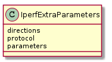

Common Iperf Parameters¶
A module to hold iperf parameter classes.
Names of parameters match the long-options given to iperf:
e.g. --port becomes IperfCommonParameters.port
and the doc-strings cross-reference them as the short form (-p).
Dependencies¶

IperfCommonParameters¶
The parameters common to all Iperf command-types.
| IperfCommonParameters() | Iperf Common Parameters are common to all Iperf commands. |
![IperfCommonParameters -|> BaseClass
IperfCommonParameters : format
IperfCommonParameters : interval
IperfCommonParameters : len
IperfCommonParameters : output
IperfCommonParameters : port
IperfCommonParameters : bind
IperfCommonParameters : compatibility
IperfCommonParameters : ipv6version
IperfCommonParameters : reportexclude
IperfCommonParameters : reportstyle
IperfCommonParameters : parameter_names
IperfCommonParameters : parallel
IperfCommonParameters : path
IperfCommonParameters : String parameter_names](../_images/plantuml-92967369cf76c449c626e486ccdf510aa85e2d2d.png)
Note
the parameter names attribute is there to get a list of the parameters names (presumably for the builder).
Iperf Extra Parameters¶
This is a holder of valid non-iperf parameters.
| IperfExtraParameters |

Note
IperfExtraParameters.parameters is a collection of the parameters so you can check membership.